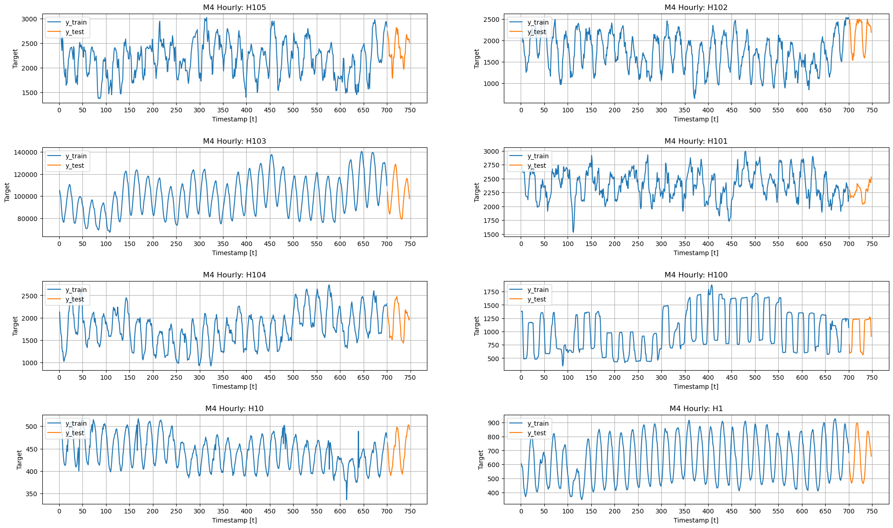
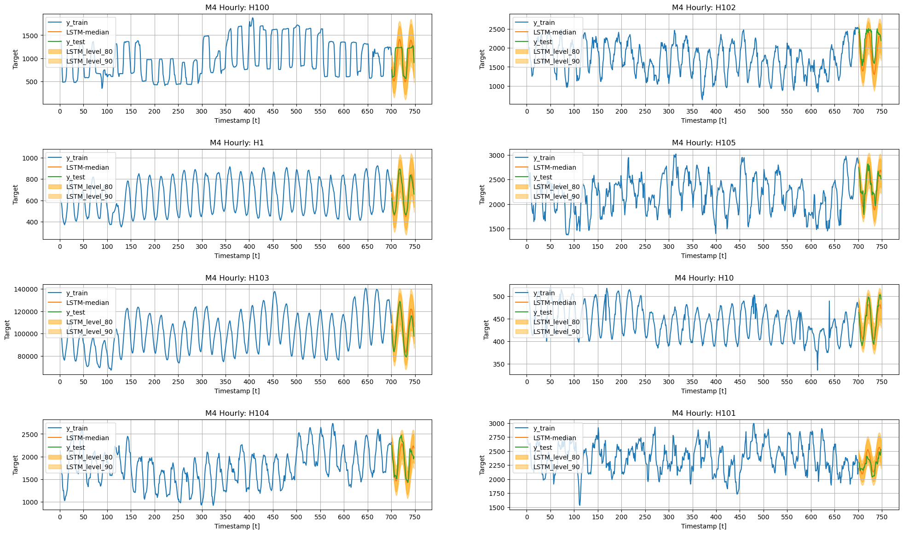
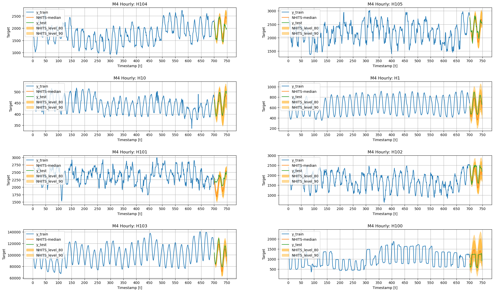

# %%capture
# !pip install git+https://github.com/Nixtla/neuralforecast.git@main• Probabilistic Forecasts
Probabilistic forecasting is a natural answer to quantify the uncertainty of target variable’s future. The task requires to model the following conditional predictive distribution:
\[\mathbb{P}(\mathbf{y}_{t+1:t+H} \;|\; \mathbf{y}_{:t})\]
We will show you how to tackle the task with NeuralForecast by combining a classic Long Short Term Memory Network (LSTM) and the Neural Hierarchical Interpolation (NHITS) with the multi quantile loss function (MQLoss).
\[ \mathrm{MQLoss}(y_{\tau}, [\hat{y}^{(q1)}_{\tau},\hat{y}^{(q2)}_{\tau},\dots,\hat{y}^{(Q)}_{\tau}]) = \frac{1}{H} \sum_{q} \mathrm{QL}(y_{\tau}, \hat{y}^{(q)}_{\tau}) \]
In this notebook we will: 1. Install NeuralForecast Library 2. Explore the M4-Hourly data. 3. Train the LSTM and NHITS 4. Visualize the LSTM/NHITS prediction intervals.
You can run these experiments using GPU with Google Colab.

1. Installing NeuralForecast
import random
import warnings
warnings.filterwarnings("ignore")
from itertools import product
import numpy as np
import pandas as pd
import matplotlib.pyplot as plt
from neuralforecast import NeuralForecast
from neuralforecast.losses.pytorch import MQLoss
from neuralforecast.models import LSTM, DilatedRNN, NHITSUseful functions
The plot_grid auxiliary function defined below will be useful to plot different time series, and different models’ forecasts.
def plot_grid(df_train, df_test=None, plot_random=True, model=None, level=None):
fig, axes = plt.subplots(4, 2, figsize = (24, 14))
unique_ids = df_train['unique_id'].unique()
assert len(unique_ids) >= 8, "Must provide at least 8 ts"
if plot_random:
unique_ids = random.sample(list(unique_ids), k=8)
else:
unique_uids = unique_ids[:8]
for uid, (idx, idy) in zip(unique_ids, product(range(4), range(2))):
train_uid = df_train.query('unique_id == @uid')
axes[idx, idy].plot(train_uid['ds'], train_uid['y'], label = 'y_train')
if df_test is not None:
max_ds = train_uid['ds'].max()
test_uid = df_test.query('unique_id == @uid')
for col in ['y', f'{model}-median', 'y_test']:
if col in test_uid:
axes[idx, idy].plot(test_uid['ds'], test_uid[col], label=col)
if level is not None:
for l, alpha in zip(sorted(level), [0.5, .4, .35, .2]):
axes[idx, idy].fill_between(
test_uid['ds'],
test_uid[f'{model}-lo-{l}.0'],
test_uid[f'{model}-hi-{l}.0'],
alpha=alpha,
color='orange',
label=f'{model}_level_{l}',
)
axes[idx, idy].set_title(f'M4 Hourly: {uid}')
axes[idx, idy].set_xlabel('Timestamp [t]')
axes[idx, idy].set_ylabel('Target')
axes[idx, idy].legend(loc='upper left')
axes[idx, idy].xaxis.set_major_locator(plt.MaxNLocator(20))
axes[idx, idy].grid()
fig.subplots_adjust(hspace=0.5)
plt.show()2. Loading M4 Data
For testing purposes, we will use the Hourly dataset from the M4 competition.
!wget https://auto-arima-results.s3.amazonaws.com/M4-Hourly.csv
!wget https://auto-arima-results.s3.amazonaws.com/M4-Hourly-test.csvY_train_df = pd.read_csv('M4-Hourly.csv')
Y_test_df = pd.read_csv('M4-Hourly-test.csv').rename(columns={'y': 'y_test'})In this example we will use a subset of the data to avoid waiting too long. You can modify the number of series if you want.
n_series = 8
uids = Y_train_df['unique_id'].unique()[:n_series]
Y_train_df = Y_train_df.query('unique_id in @uids')
Y_test_df = Y_test_df.query('unique_id in @uids')plot_grid(Y_train_df, Y_test_df)
3. Model Training
The core.NeuralForecast provides a high-level interface with our collection of PyTorch models. NeuralForecast is instantiated with a list of models=[LSTM(...), NHITS(...)], configured for the forecasting task.
- The
horizonparameter controls the number of steps ahead of the predictions, in this example 48 hours ahead (2 days). - The
MQLosswithlevels=[80,90]specializes the network’s output into the 80% and 90% prediction intervals. - The
max_epochs=500, controls the duration of the network’s training.
For more network’s instantiation details check their documentation.
horizon = 48
levels = [80, 90]
models = [LSTM(input_size=-1, h=horizon,
loss=MQLoss(level=levels), max_epochs=300),
NHITS(input_size=7*horizon, h=horizon,
n_freq_downsample=[24, 12, 1],
loss=MQLoss(level=levels), max_epochs=200),]
fcst = NeuralForecast(models=models, freq='H')The models are trained using cross-learning, that is a set of correlated series in Y_train_df is used during a shared optimization.
fcst.fit(df=Y_train_df)forecasts = fcst.predict()
forecasts = forecasts.reset_index()
forecasts.head()| unique_id | ds | LSTM-median | LSTM-lo-90.0 | LSTM-lo-80.0 | LSTM-hi-80.0 | LSTM-hi-90.0 | NHITS-median | NHITS-lo-90.0 | NHITS-lo-80.0 | NHITS-hi-80.0 | NHITS-hi-90.0 | |
|---|---|---|---|---|---|---|---|---|---|---|---|---|
| 0 | H1 | 701 | 661.390320 | 514.213257 | 554.171082 | 772.187317 | 812.635864 | 580.240234 | 457.294403 | 519.597900 | 653.173462 | 709.418884 |
| 1 | H1 | 702 | 608.767395 | 469.444824 | 492.870117 | 723.411987 | 763.704773 | 523.138855 | 417.413483 | 460.784607 | 590.277100 | 656.792969 |
| 2 | H1 | 703 | 553.830139 | 408.536591 | 440.972717 | 675.927063 | 709.604065 | 481.189453 | 377.372284 | 398.614319 | 566.097351 | 602.510559 |
| 3 | H1 | 704 | 509.802368 | 359.942810 | 386.292145 | 633.949219 | 680.044678 | 451.847473 | 353.026123 | 376.023682 | 536.535156 | 573.252197 |
| 4 | H1 | 705 | 479.271240 | 321.798004 | 357.680634 | 608.942566 | 648.161865 | 429.752136 | 316.402679 | 368.250336 | 510.772217 | 576.168213 |
Y_test_df = Y_test_df.merge(forecasts, how='left', on=['unique_id', 'ds'])4. Plotting Predictions
Here we finalize our analysis by plotting the prediction intervals and verifying that both the LSTM and NHITS are giving reasonable results.
Consider the output [NHITS-lo-90.0, NHITS-hi-90.0], that represents the 80% prediction interval of the NHITS network; its lower limit gives the 5th percentile (or 0.05 quantile) while its upper limit gives the 95th percentile (or 0.95 quantile). For well-trained models we expect that the target values lie within the interval 90% of the time.
LSTM
plot_grid(Y_train_df, Y_test_df, level=levels, model='LSTM')
NHITS
plot_grid(Y_train_df, Y_test_df, level=levels, model='NHITS')
References
- Roger Koenker and Gilbert Basset (1978). Regression Quantiles, Econometrica.
- Jeffrey L. Elman (1990). “Finding Structure in Time”.
- Cristian Challu, Kin G. Olivares, Boris N. Oreshkin, Federico Garza, Max Mergenthaler-Canseco, Artur Dubrawski (2022). “N-HiTS: Neural Hierarchical Interpolation for Time Series Forecasting”.